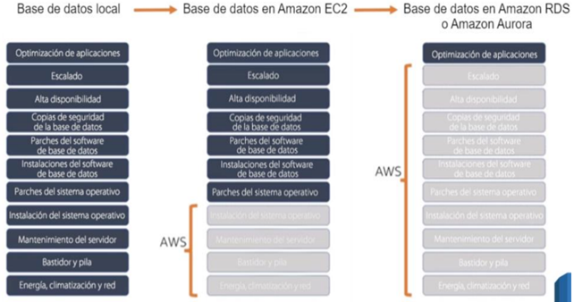
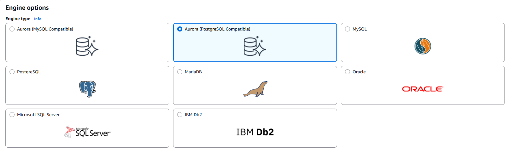
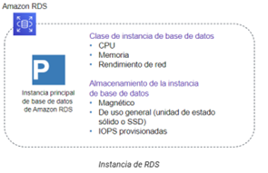
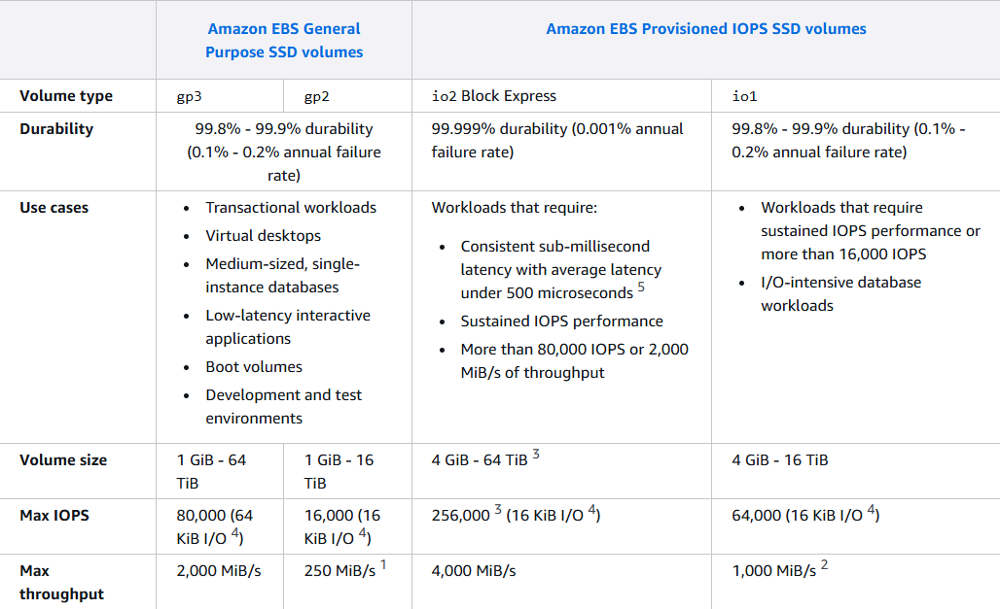
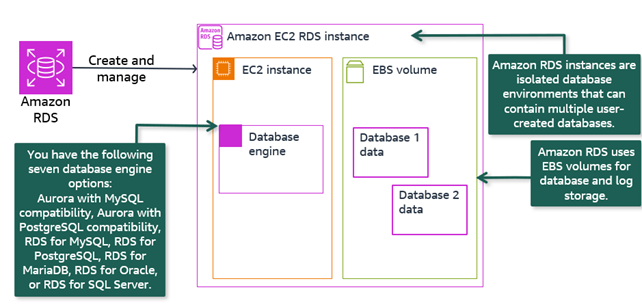
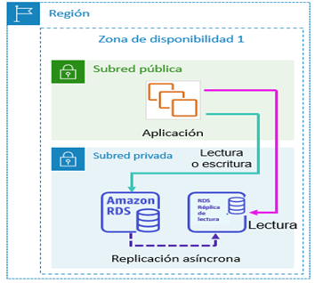
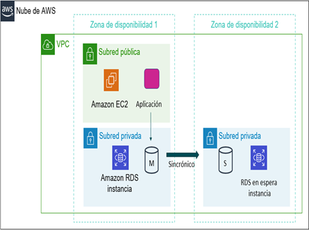

Administración de Bases de Datos Relacionales.
OLAP vs OLTP
El procesamiento analítico en línea (OLAP) y el procesamiento de transacciones en línea (OLTP) son sistemas de procesamiento de datos que ayudan a almacenar y analizar datos empresariales. Se pueden recopilar y almacenar datos de múltiples fuentes, como sitios web, aplicaciones, medidores inteligentes y sistemas internos. El OLAP combina y agrupa los datos para que puedan ser analizados desde diferentes puntos de vista. Por el contrario, el OLTP almacena y actualiza los datos transaccionales de manera confiable y eficiente en grandes volúmenes. Las bases de datos de OLTP pueden ser uno de los diferentes orígenes de datos de un sistema OLAP.
Ejemplo de las diferencias entre el OLAP y el OLTP
Pensemos en una gran empresa minorista que opera cientos de tiendas en todo el país. La empresa tiene una enorme base de datos que hace un seguimiento de las ventas, el inventario, los datos de los clientes y otras métricas clave. La empresa utiliza un sistema de OLTP para procesar transacciones en tiempo real, actualizar los niveles de inventario y administrar las cuentas de los clientes. Cada tienda está conectada a la base de datos central, que actualiza los niveles de inventario en tiempo real a medida que se venden los productos. La empresa también usa la tecnología de OLTP para administrar las cuentas de los clientes, por ejemplo, para rastrear los puntos de fidelidad, administrar la información de pago y procesar las devoluciones. Además, la empresa utiliza un sistema de OLAP para analizar los datos recopilados por el sistema de OLTP. Los analistas de negocios de la empresa pueden utilizar el OLAP para generar informes sobre las tendencias de ventas, los niveles de inventario, la demografía de los clientes y otras métricas clave. Realizan consultas complejas sobre grandes volúmenes de datos históricos para identificar patrones y tendencias que puedan servir para tomar decisiones empresariales. Identifican los productos populares en un periodo de tiempo determinado y utilizan la información para optimizar los presupuestos de inventario.
Amazon RDS
Amazon Relational Database Service (Amazon RDS) es un servicio de base de datos relacional que facilita las tareas de configuración, operación y escalado de una base de datos en la nube.
Desde las bases de datos en las instalaciones a Amazon RDS

En la figura anterior podemos comparar las responsabilidades asumidas por el propietario de la base de datos en el caso de tenerlas gestionadas en sus propias instalaciones (primer recuadro) con las que tendría en el caso de tener la Base de Datos creada con un SGBD instalado en un servicio Amazon EC2 (segundo recuadro) y finalmente, en el tercer recuadro, con una Base de Datos creada con el servicio RDS. Como vemos, en el primer caso, todos los ítems son responsabilidad del propietario de la base de datos. En el segundo, tendríamos los ítems directamente relacionados con la gestión de la máquina virtual (EC2) que pasarían a ser proporcionados por AWS. Y por último, en el tercero, vemos ya que todos los ítems a excepción de la optimización de aplicaciones pasan a ser responsabilidad de AWS.
El servicio Amazon RDS
El almacenamiento en la nube ofrece un gran número de ventajas. Otro de los productos estrella de la computación en la nube es el uso de bases de datos, ya sean distribuidas o no. La principal ventaja de utilizar un servicio de base de datos basado en la nube es que no requieren de la administración por parte del usuario. Éste tan sólo utiliza el servicio sin necesidad de tener conocimientos avanzados sobre su administración. Estos servicios se conocen como administrados, ya que la propia plataforma cloud se encarga de gestionar el escalado, las copias de seguridad automáticas, la tolerancia a errores y la alta disponibilidad, y por tanto, estos servicios forman parte de una solución PaaS. Si nosotros creásemos una instancia EC2 e instalásemos cualquier sistema gestor de base de datos, como MariaDB o PostgreSQL, seríamos responsables de varias tareas administrativas, como el mantenimiento del servidor y la huella energética, el software, la instalación, la implementación de parches y las copias de seguridad de la base de datos, así como de garantizar su alta disponibilidad, de planificar la escalabilidad y la seguridad de los datos, y de instalar el sistema operativo e instalarle los respectivos parches.
Datos relacionales - Amazon RDS
AWS ofrece Amazon RDS (https://aws.amazon.com/es/rds/) como servicio administrado que configura y opera una base de datos relacional en la nube, de manera que como desarrolladores sólo hemos de enfocar nuestros esfuerzos en los datos y optimizar nuestras aplicaciones.
Instancias de bases de datos
Una instancia de base de datos es un entorno de base de datos aislado que puede contener varias bases de datos creadas por el usuario. RDS admite ocho motores de bases de datos:

Los recursos que se encuentran en una instancia de base de datos se definen en función de la clase de instancia de base de datos, y el tipo de almacenamiento se determina por el tipo de disco. Las instancias y el almacenamiento de base de datos difieren en cuanto a las características de rendimiento y al precio, lo que permite adaptar el coste y el rendimiento a las necesidades de nuestra base de datos.

La siguiente imagen muestra el rendimiento y disponibilidad que ofrece cada uno de los tipos de volúmenes EBS. Hay que tener en cuenta los siguientes detalles:
- Los tamaños de volumen igual o menores a 170 GiB proveen un máximo throughput de 128 MiB/s.
- Los volúmenes mayores de 170 GiB, pero menores que 334 GiB proveen un máximo throughput de 250 MiB/s si existen burst credits.
- Los volúmenes mayores de 334 GiB proveen de 250 MiB/s sin tener en cuenta el número de burst credits.

Con Amazon RDS es posible utilizar el código, las aplicaciones y las herramientas utilizadas actualmente con las bases de datos existentes. Por ejemplo, se puede crear una base de datos MySQL en Amazon RDS y seguir utilizando MySQL Workbench para conectar a la misma y acceder a todas las utilidades de diseño que ofrece esta herramienta de forma visual. Una de las principales ventajas de Amazon RDS es que gestiona las tareas de administración de bases de datos, como el aprovisionamiento, la aplicación de revisiones, las copias de seguridad, la recuperación, la detección de errores y la reparación. Al igual que con todos los servicios de AWS, no se requieren inversiones iniciales y solo paga por los recursos que utiliza. Se puede obtener más información en la página de precios de Amazon RDS. Se paga conforme al hardware utilizado, transferencia y almacenamiento de datos, igual que en una instancia convencional.
Los clientes pueden optimizar el rendimiento con características, como Multi-AZ con dos modos de espera legibles, escrituras y lecturas optimizadas e instancias basadas en AWS Graviton3, y elegir entre varias opciones de precios para administrar los costos de manera eficaz.
Arquitectura Amazon RDS
Amazon RDS facilita el despliegue y mantenimiento de bases de datos relacionales en la nube. Gestiona una instancia EC2 especializada que proporciona capacidad computacional.
Las instancias de Amazon RDS son entornos de bases de datos que pueden contener múltiples bases de datos creadas por el usuario. Cada base de datos contiene la información de la organización.
El motor de base de datos permite recuperar y editar la información almacenada.
Amazon RDS utiliza volúmenes EBS para el almacenamiento de la base de datos y el log. Se puede escalar la capacidad de almacenamiento de la instancia de base de datos.

Alto Rendimiento
RDS ofrece una alta disponibilidad mediante el despliegue multi-AZ, que genera uno o varios esclavos en diferentes zonas de disponibilidad (availability zones - AZ), que pueden promocionar automáticamente en caso de fallo sin tener que cambiar nada en la aplicación.
Réplicas de lectura para el rendimiento
Amazon RDS permite utilizar una instancia de base de datos de origen para crear un tipo especial de instancia de base de datos, que se denomina réplica de lectura. Las actualizaciones que se hacen en la instancia de base de datos de origen se copian de forma asíncrona en la réplica de lectura.
El uso de réplicas de lectura mejora el rendimiento. Por ejemplo, puede reducir la carga de la instancia de base de datos de origen mediante el direccionamiento de las consultas de lectura de sus aplicaciones a la réplica de lectura. Las réplicas de lectura también aumentan la disponibilidad. Para las cargas de trabajo de base de datos que realizan un uso intensivo de las lecturas, es posible escalar de manera elástica más allá de los límites de capacidad de una única instancia de base de datos. Las réplicas de lectura también se pueden promover manualmente para que se transformen en instancias de base de datos independientes, cuando sea necesario.
Las réplicas de lectura están disponibles en Amazon RDS for MySQL, MariaDB, PostgreSQL y Oracle. Cada uno de estos motores de base de datos permite hasta un máximo de cinco réplicas de lectura por base de datos principal. Si necesita una consistencia estricta de lectura después de escritura (es decir, lo que lo que lee es siempre lo que acaba de escribir, incluso si lo lee inmediatamente), entonces debe leer desde la instancia de base de datos principal. De lo contrario, puede distribuir la carga y leer desde una réplica de lectura.

Alta disponibilidad. Despliegue multi-AZ

Una de las funciones más potentes de Amazon RDS es la posibilidad de configurar su instancia de base de datos para una alta disponibilidad con un despliegue Multi-AZ. Una vez configurado el despliegue Multi-AZ, Amazon RDS genera automáticamente una copia en espera de la instancia de base de datos en otra zona de disponibilidad de la misma VPC. Tras propagar la copia de la base de datos, las transacciones se replican de forma sincrónica en la copia en espera. Ejecutar una instancia de base de datos en un despliegue Multi-AZ puede mejorar la disponibilidad durante el mantenimiento planificado del sistema y puede proteger las bases de datos contra errores de la instancia de base de datos e interrupciones de la zona de disponibilidad. Por lo tanto, si la instancia de base de datos principal falla en un despliegue Multi-AZ, Amazon RDS pone en línea automáticamente la instancia de base de datos en espera como nueva instancia principal. La replicación sincrónica minimiza la posibilidad de pérdida de datos. Dado que las aplicaciones hacen referencia a la base de datos por su nombre mediante el punto de enlace del sistema de nombres de dominio (DNS) de Amazon RDS, no es necesario cambiar nada en el código de la aplicación para utilizar la copia en espera para la conmutación por error.
Casos de uso
Amazon RDS es ideal para las aplicaciones web y móviles que necesitan una base de datos con alto rendimiento, enorme escalabilidad en el almacenamiento y alta disponibilidad. Se recomienda RDS cuando nuestra aplicación necesite:
- Transacciones o consultas complejas
- Tasa de consulta o escritura media a alta: hasta 30.000 IOPS (15.000 lecturas + 15.000 escrituras)
- No más de una única partición o nodo de trabajo
- Alta durabilidad
En cambio, no se recomienda cuando:
- Tasas de lectura o escritura muy grandes (por ejemplo, 150.000 escrituras por segundo)
- Fragmentación causada por el gran tamaño de los datos o las altas demandas de rendimiento
- Solicitudes y consultas GET o PUT simples que una base de datos NoSQL puede manejar
- Personalización del sistema de administración de bases de datos relacionales (en este caso, es mejor instalar por nuestra cuenta el SGBD que necesitemos en una instancia EC2).
Costes
Claramente, el coste de RDS va a ser superior al coste de la infraestructura que utiliza. Aún así, hemos de tener en cuenta las ventajas de ahorrarnos el mantenimiento y las tareas asociadas que normalmente realiza un administrador de bases de datos (DBA).
Su coste se calcula en base al tiempo de ejecución (calculado en horas) así como las características de la base de datos, como pueden ser el motor, el tipo de instancia y su cantidad, así como la clase de memoria de la base de datos.
Otros gastos asociados son:
- almacenamiento aprovisionado: el almacenamiento para copias de seguridad de hasta el 100% del almacenamiento de nuestra base de datos activa es gratuito. Una vez que se termina la instancia de base de datos, el almacenamiento para copias de seguridad se factura por GB por mes.
- cantidad de solicitudes de entrada y de salida.
Aunque se recomienda utilizar la calculadora de costes para afinar en el presupuesto, por ejemplo, una base de datos con MariaDB con una instancia db.m4.large con 2 procesadores y 8GB de RAM, en una única AZ, con un porcentaje de utilización del 100% y 30GB para almacenar los datos, cuesta alrededor de 131$ mensuales. En cambio, si la cambiamos por dos instancias más potentes, como puede ser la db.m4.4xlarge, con 16 procesadores y 64 GB de RAM, en multi-AZ ya sube a unos 4.100$ al mes.